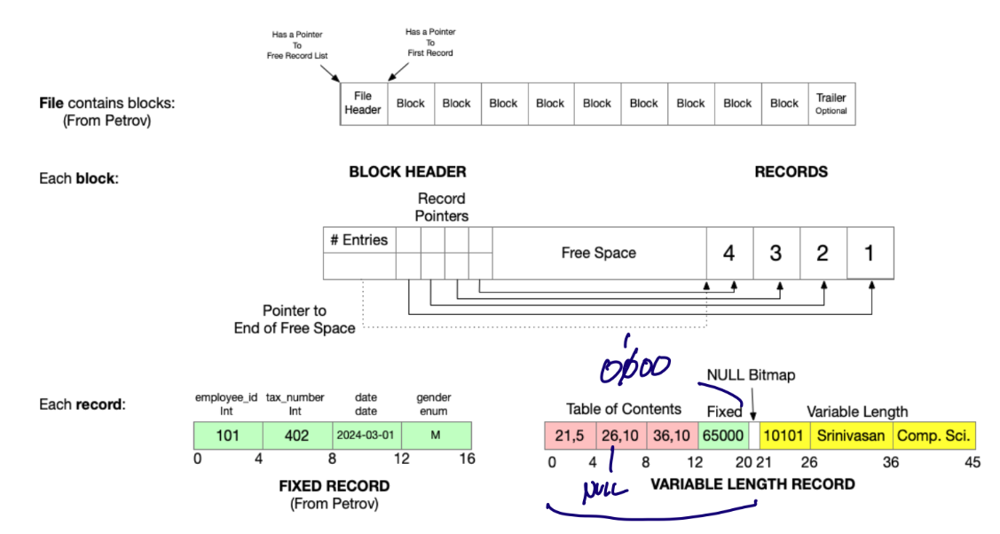
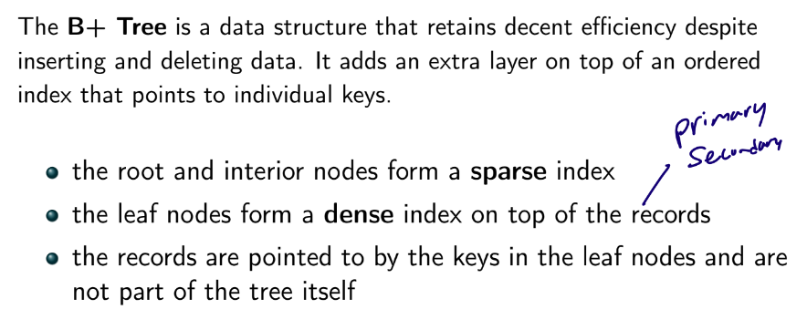
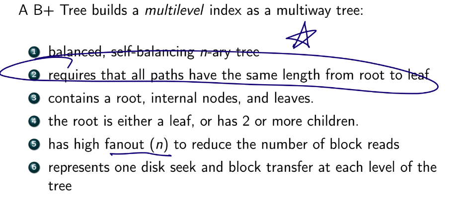
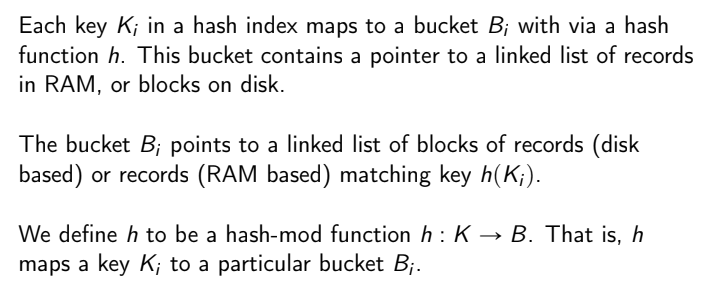

Storage Engine
- storage engine (or storage manager) is responsible for storing, retrieving, managing data in memory/disk
- most optimize data storage for rows
- some database systems store data entirely in RAM (redis), others use both disk and memory
- tradeoffs
- speed
- cost
- data reliability
- disk is either SSD OR HDD
Data Storage Methods
- main memory / RAM
- fast but expensive
- fastest random access (RA)
- volatile - lose data if powered off
- solid state / flash
- faster than HDD
- expensive (but not as much as RAM)
- fast RA
- nonvolatile
- magnetic disks / HDD
- very cheap but very slow
- nasty failures
- optical media / CD / DVD / floppies
- tape storage
- snail slow
- dirt cheap
- only sequential access
- very stable
- cloud storage
Hard Disks (HDD)
- anatomy

- heads float above disks
- if they touch (called a head crash) it can scratch the disk
- if HDD fails you can recover the data physically (can't do this with SSD)
- performance
- many metrics
- access time - time from r/w request to the time transfer starts
- seek time - time from head to move from parked stage to a particular sector
- rotational latency - time it takes to find a sector (assuming head is already on a track)
- data transfer rate - time to transfer a sector to RAM
- depends on the interface, e.g. SATA
- MTBF - mean time between failures
- hard disk organization
- data on disk addressable by blocks
- goal: minimize block transfers between disk and RAM
- data access
- sequential - access blocks in a predetermined order, usually contiguously
- random access - target blocks are distributed all over disk and not in a particular order
- techniques to avoid data swapping (between RAM and disk)
- caching / buffering - read blocks into a buffer; evict when full
- databases use the MRU (most recently used) eviction policy
- read-ahead - a request for bi also fetches j the contiguous blocks after it (in case we need it soon)
- scheduling - group r/w requests by cylinder
- file organization - how records/blocks are stored in disk
- 
- NULL bitmap tells you which records are NULL
- DB maps reocrds into blocks, into files
- 1+ records fit in a block
- 1+ blocks form a file
- records⊆blocks⊆files⊆relation
- records in distinct tables will have different sizes
- two ways to store records into files
- assume all records are the same length
- easy to find the k-th records
- two problems:
- what if block size is not a multiple of record size?
- we'd have to use a new block and waste some space
- what happens when we delete records?
- records ordered in linked list so first change pointers
- keep track of an empty_record linked list so you know where you can fill in
- if the block where you need to insert record (for preservation of sequence) is full, put record in overflow block
- from time to time reorder records so they are again sequential
- allow records to differ in length (slotted page)
- create a table of records that points to variable-sized attributes
- each entry is the form of (offset, length)
- followed by the data for fixed-size attributes, the null bitmap, then finally data for variable-sized attributes

- organizing orecords into blocks
- each block has a header that contains:
- num records in the block
- location of end of free space in block
- location and size of each record

- non-volatile write buffers
- if there are lots of writes, we might have to wait before we can write the block to disk
- queue it in non-volatile RAM (NVRAM) while waiting
- if power outage occurs, the queue can still persist for a little and be written to disk successfully
- if NVRAM fills up the DB will block
Indexing
- a full table scan is slow, must do better

- index - enables fast lookups
- given a search key, an index gives you the block addresses + offsets of relevant records
- search key can be anything (not necessarily PK, CK, etc)
- if index fits in RAM we must read it into RAM first
- metrics for indices
- access time - equality or range search?
- access/search time
- insertion time
- deletion time
- space overhead
- Ordered indices - based on a sorted ordering of the sort-key values
- ISAM - Index Sequential Access Method
- was revolution and very simple to implement
- but has limitations that have caused its deprecation
- good at first when data is stored contiguously
- but over time there may be many overflow blocks which slows things down
- primary (clustering) vs secondary (non-clustering)

- primary index usually associated with PK
- pretty fast
- if there are multiple records with the search key, index only points to the first one
- then search data sequentially to find all of the matching records

- secondary - data file is sorted by some search key different from the one used to create the index
- the index has a linked list for each search key
- linked list contains pointers to all duplicate values of the search key in the data
- can only be dense! since data file not sorted by the search key
- dense vs sparse
- dense - every value of the search key in the records is in the index
- sparse - only some of the possible key values in the records in is the index
- follow the greatest index that is smaller than the search key than scan downward until target is found
- pro: can more likely read index into RAM
- con: more block transfers when searching for target block
- how to pick the keys that appear in the sparse index?
- goal: minimize block transfers
- so pick first search-key in each block
- B+ Tree
- 
- 
- only stores index, NO DATA

- order of insertion matters for what tree looks like

- traversal times, given tS seek time and tT transfer time
- traversing a level: tS+tT
- traversing one leaf node to the next: tT (for primary)
- fetching a record tS+tT
- search time: h(tS+tT)
- inserts/deletions complexity is O(logceil(n/2)H)

- Hash indices - based on a uniform distribution of values across a range of buckets
- random access (similar to hash table)
- great at answering equality queries, but no so much at answering rnage queries
- since keys are not stored in a consistent order
- xzx